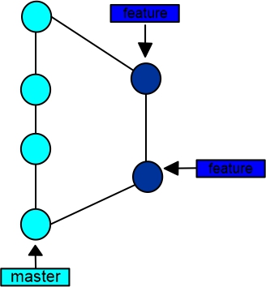
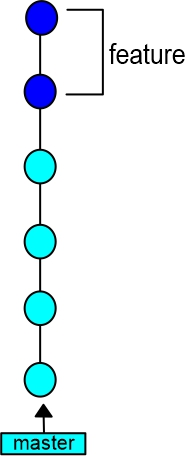

Advanced Git Concepts and Troubleshooting
Overview
In the previous lesson on Git, we learned of foundational git concepts and commands using the terminal and directly from VS code. In this lesson, we’ll explore some advanced git concepts and how to troubleshoot issues, when things are not working properly.
Learning Objectives
Students will understand and be able to run some advanced Git functions using the terminal.
Students will be able to resolve common conflicts that come up while using Git.
Lesson
Git provides developers with some powerful features and has become the standard tool for version control. Using its advanced features can seem intimidating at first, but with regular practice, they can become second nature and can greatly improve your workflow. If you’re feeling motivated, here are some advanced Git concepts and commands to enhance your productivity :
Git Stash
You may have noticed that while working on a branch locally, you won’t be able to checkout (switch) to another branch and pull in upstream (remote repo) changes without making a commit of the changes made to your current branch. With git stash you can temporarily save changes made on your working branch so you can switch to a different branch, pull in upstream changes, and switch back to your original branch, at which point you can apply the saved changes. It works by keeping or saving all of your uncommitted changes locally, but doesn’t commit them, while also cleaning up your working tree. Stashing can come in handy if you need to move away from what you are doing, say to fix an urgent bug, but aren’t quite ready to commit what you’ve done so far.
When you’re ready to continue, you can pull your changes from the stash with the command above.
Git Revert
Git revert is a command that allows you to undo a previous commit without deleting it entirely. It creates a new commit that reverses the changes made in the previous commit, making it easy to fix mistakes or roll back to a previous version of your project. You can use git revert when you want to undo changes that have already been pushed to a shared repository or when you need to fix a bug without affecting other parts of your code. To use git revert, you need to identify the commit you want to undo and run the command:
This will create a new commit that reverses the changes introduced by the previous commit. It’s important to note that git revert doesn’t delete any commits or rewrite the commit history, which makes it a safer option compared to other undo methods. You can also use this if you want to revert the latest commit:
Git Grep
Git grep is a command that lets you search for specific text or patterns within your repository. This can be helpful when you need to find all instances of a particular function, variable, or string across your project. It searches through the tracked files in the current branch of a Git repository and returns a list of files that match the specified text or pattern, along with the line numbers where it appears. This can be particularly helpful when working on large projects with many files and lines of code.
To use git grep, simply run the command followed by the search term:
Git Diff
Git diff allows you to compare file changes between the working directory and the latest commit in the local repository, two commits or two branches. It shows the differences between the files, highlighting the lines that were added or removed. This command is useful when you want to review your changes before committing them, or when you want to see the changes made by someone else on your team. It’s also helpful when you want to troubleshoot issues by comparing different versions of your code.
To compare file changes between the working directory and the local repository, simply type:
To compare two commits:
To compare two branches:
Git Rebase
If you wanted to merge all your commits in a feature branch to the main branch, what probably comes to mind is using the git merge command. This will take all of the changes in the featured branch and stuff it into one merge commit and then put that merge commit into the main branch. After those changes are combined into that merge commit, it looks scattered, especially when you have a bunch of people working on the featured branch and pushing changes almost every time.

The git rebase command can solve that for us. It takes all of your commits from a featured branch and moves them on top of the main commit.

A major advantage is that it easily traces your commits inside the main branch. You should use the git rebase command to consolidate into a single branch when you have multiple private branches. This will display the commit history in a linear form, which makes it easy to see the progression of changes because they are all applied one after the other, without any branches or merge commits. This can make it easier to understand how the code evolved over time.
Additionally, a linear history can make it easier to track down bugs because you can more easily see when a particular change was introduced, and to revert changes since you can simply revert a single commit rather than dealing with the complexity of merging branches.
To use the rebase command, simply type:
Where <base> is the branch you want to move your current branch to.
Git Clean
If you have files in your working directory that you don’t want or need, git clean can help you out. Git Clean is a command that allows you to remove untracked files from your working directory. These could be temporary files, build artifacts, or other files that you don’t need. To use git clean - just navigate to the directory where you want to clean up and run the command:
You can also use options like -n to preview which files will be deleted before actually deleting them, and -d to delete untracked directories as well as files. Git Clean is useful for keeping your working directory clean and organized. Just be careful not to accidentally delete any important files!
Conclusion
Good Job completing this lesson! By now you should:
Understand some advanced Git concepts and know how to run Git commands using the terminal.
Know how to troubleshoot conflicts that may arise while using Git.